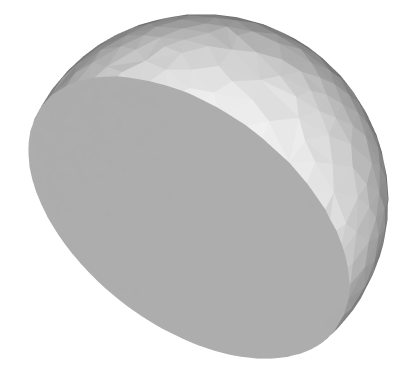
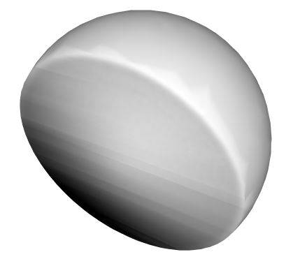

softenNormals operation
softenNormals(angle)
angle float For each vertex, use the average of the adjacent face normals. Edges where face normals meet at an angle greater than or equal as specified are shaded as hard edges. Setting an angle of
| 0 degrees | Equivalent to setNormals(hard). |
| 30 degrees | Equivalent to setNormals(auto). |
| 180 degrees | Equivalent to setNormals(soft). |
Disconnected shapes must be combined and duplicate vertices must be merged in order to compute vertex normals using adjacent face normals.
The softenNormals operation sets the normals of the current shapes' geometry to the desired mode.
Related
Examples
Shaded Hemisphere

